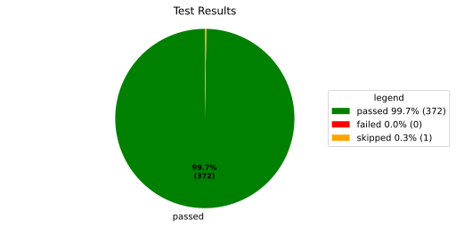
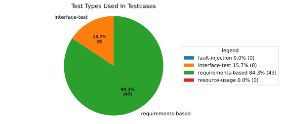

Reference Docs in Tests#
This guide explains how to annotate test cases so that docs-as-code automatically creates traceability links between tests and requirements.
How to annotate tests#
To link a test to the requirements it verifies, add the test metadata using the mechanism provided by its test framework:
Python (pytest)#
Use the
@add_test_propertiesdecorator. The test docstring supplies theDescriptionmetadata.
C++ (gTest)#
Use
RecordProperty. Put shared properties inSetUp()and per-test properties inside eachTEST_F.
Rust#
There is currently no provided official way to add this metadata in Rust. Use the advanced JUnit XML path below until Rust support is available.
See the Verification Templates for complete examples and the required metadata.
Advanced usage: JUnit XML for other languages#
This section is only relevant when your language or test framework does not have one of the integrations above. In that case, produce JUnit XML with the metadata described below. The generated test results are processed automatically and create GitHub links from the requirements to the testcases.
The extension looks for files named test.xml under bazel-testlogs/ or
tests-report/ at the workspace root. Create tests-report/ manually when
the test framework needs a separate pre-run step or produces matrix results.
Required properties#
Every linked test must declare the following properties (see gd_guidl__verification_specification for detailed values):
PartiallyVerifiesand/orFullyVerifiesComma-separated list of requirement IDs that the test covers.
TestTypeFor example
requirements-based,interface-test, orfault-injection.DerivationTechniqueFor example
boundary-values,equivalence-classes, orerror-guessing.DescriptionA human-readable explanation of the test objective and expected outcome.
What should a test.xml look like?#
Each testcase must include its source file and line number as attributes, along with the verification properties.
<?xml version="1.0" encoding="utf-8"?>
<testsuites name="pytest tests">
<testsuite errors="0" failures="0" hostname="LG-0005" name="pytest" skipped="0" tests="118" time="6.617" timestamp="2026-06-08T17:56:07.635773+00:00">
<testcase classname="src.extensions.score_source_code_linker.tests.test_testlink" file="src/extensions/score_source_code_linker/tests/test_testlink.py" line="40" name="test_testlink_serialization_roundtrip" time="0.000">
<properties>
<property name="PartiallyVerifies" value="tool_req__docs_test_link_testcase"></property>
<property name="TestType" value="requirements-based"></property>
<property name="DerivationTechnique" value="requirements-analysis"></property>
</properties>
</testcase>
<testcase classname="src.extensions.score_source_code_linker.tests.test_testlink" file="src/extensions/score_source_code_linker/tests/test_testlink.py" line="85" name="test_clean_text_removes_ansi_and_html_unescapes" time="0.000">
<properties>
<property name="PartiallyVerifies" value="tool_req__docs_test_link_testcase"></property>
<property name="TestType" value="requirements-based"></property>
<property name="DerivationTechnique" value="requirements-analysis"></property>
</properties>
</testcase>
</testsuite>
</testsuites>
When properties or attributes are missing, testcases are still generated,
but a testcase can only be linked to requirements if either PartiallyVerifies
or FullyVerifies is filled.
Testcase result annotations#
GitHub test links are decorated with their result, for example (passed),
(failed), (skipped), or (disabled). The annotation is applied to
rendered links that target a testcase need, including the testlink entries
shown on requirements. The status text inherits the surrounding theme colour
and uses CSS classes with colours selected for the current S-CORE light and
dark themes. These colours are not configurable for arbitrary Sphinx themes.
Testcases without a result are left unchanged; links whose GitHub URL
identifies multiple testcases are also left unchanged because their result
would be ambiguous.
Running Tests and Building Docs#
Execute tests so that
test.xmlfiles are generated:bazel test //...
Build the documentation — the generated test results are picked up automatically:
bazel run //:docs
The resulting documentation shows backlinks on each requirement that is referenced by at least one test.
How do I use the generated testcases?#
Testcases can be used in different ways inside and outside your documentation. You can create lists or pie diagrams to showcase all tests as well as statistics on them. For example you can show all tests like so
.. needpie:: Test Results
:labels: passed, failed, skipped
:colors: green, red, orange
type == 'testcase' and result == 'passed'
type == 'testcase' and result == 'failed'
type == 'testcase' and result == 'skipped'

Or show the different types of properties in case you want
.. needpie:: Test Types Used In Testcases
:labels: fault-injection, interface-test, requirements-based, resource-usage
:legend:
type == 'testcase' and test_type == 'fault-injection'
type == 'testcase' and test_type == 'interface-test'
type == 'testcase' and test_type == 'requirements-based'
type == 'testcase' and test_type == 'resource-usage'

Limitations#
Tests must be executed by Bazel before building docs so
test.xmlfiles exist.Not compatible with Esbonio / live preview because generated test results are unavailable there.